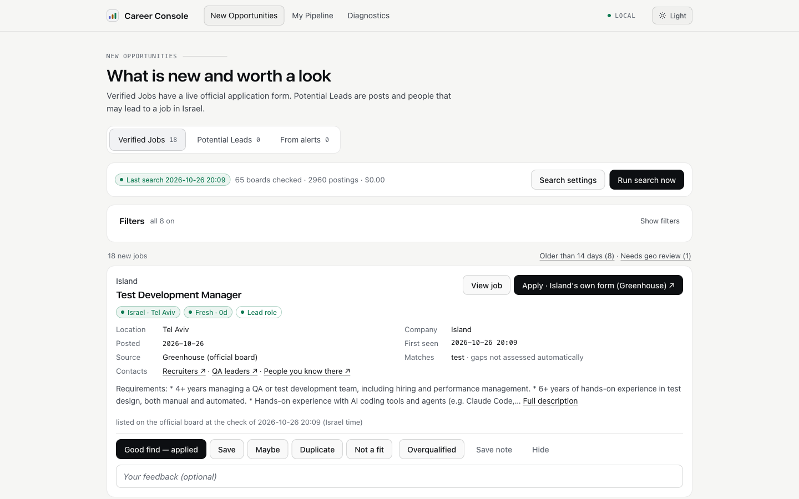
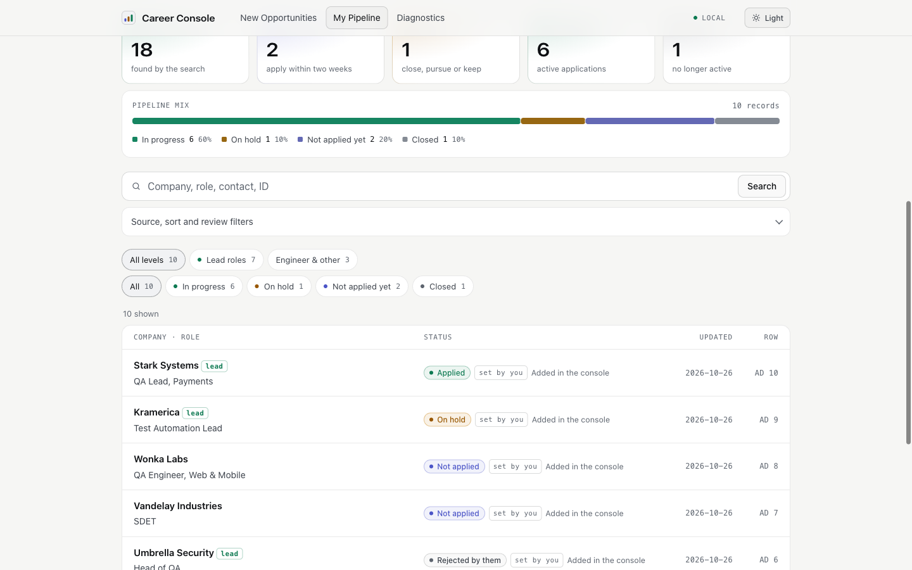

Your job search in one place, on your own computer
New jobs from employers' official career sites and from your job-alert e-mails, every application with its history, and employers' replies read for you. No account, no cloud, no AI, no subscription.
- Your data stays on your computer
- Official career sites, every few hours
- Every rule visible, every rule can be turned off
Install on a Mac: paste this into Terminal
curl -fsSL https://raw.githubusercontent.com/byakushka-cmd/career-console/main/install.sh | bash
A few minutes the first time. It puts three icons on your desktop: Career Console opens it from then on. Run the same line again to update; your data stays. Linux or Windows: manual install.
What it does
Built for a job search in Israel: Hebrew and English titles, Israeli job boards, the regions of the country.
Jobs from the employers themselves
About a hundred official career sites (Greenhouse, Lever, Ashby, Comeet, Workday) checked every few hours. You see the jobs that match your terms, are in the regions you choose and are not in your list yet. Lead roles first.
LinkedIn, AllJobs and Drushim alerts
Read from your own Gmail, read-only, and put through the same rules: no repeats of jobs you already know, the employer's own posting first.
Every application with its history
Status, notes and history for each application; lead roles and engineer roles apart. Add one in seconds: paste a link and a few words, or dictate them.
Confirmations and rejections, read for you
"We got your application" marks it as sent; "we decided not to move forward" closes it. Your own later update always wins.
Nothing is hidden without a reason
Excluded words, regions, junior positions, jobs you already know: each rule shows how many jobs it holds back and can be switched off.
One folder on your computer
Your database, settings and mailbox password stay in the console's data folder. It listens only on your computer and contacts only the career sites and your mailbox.


First steps
After the install, the console opens in your browser.
- Search settingsYour search terms, excluded words, your level and the regions that are too far for you. The defaults are for QA and test automation, lead and senior roles: change them to your field.
- Connect your GmailIn Search settings → Job-alert e-mails. Gmail needs an app password, not your normal one: turn on 2-Step Verification at myaccount.google.com/security, then create an app password at myaccount.google.com/apppasswords. The mailbox is opened read-only.
- Add your applications so far"Add an application" on My Pipeline: the search never shows them to you as new.
- Let it search by itselfEvery two hours from 8:00 to 22:00:
cd ~/CareerConsole && uv run career-console schedule --install. Or press Search Jobs Now on your desktop.
Good to know
| What it costs | Nothing. No paid services, no API keys. |
| What it needs | A Mac for the one-line install and the desktop icons; on Linux and Windows it runs from the terminal. |
| Where your data is | ~/CareerConsole/data: never uploaded, never part of the code you download. |
| Backups | uv run career-console backup writes one self-contained file; restore brings it back. |
| Never scraped. LinkedIn jobs come only from the alert e-mails LinkedIn sends you. |